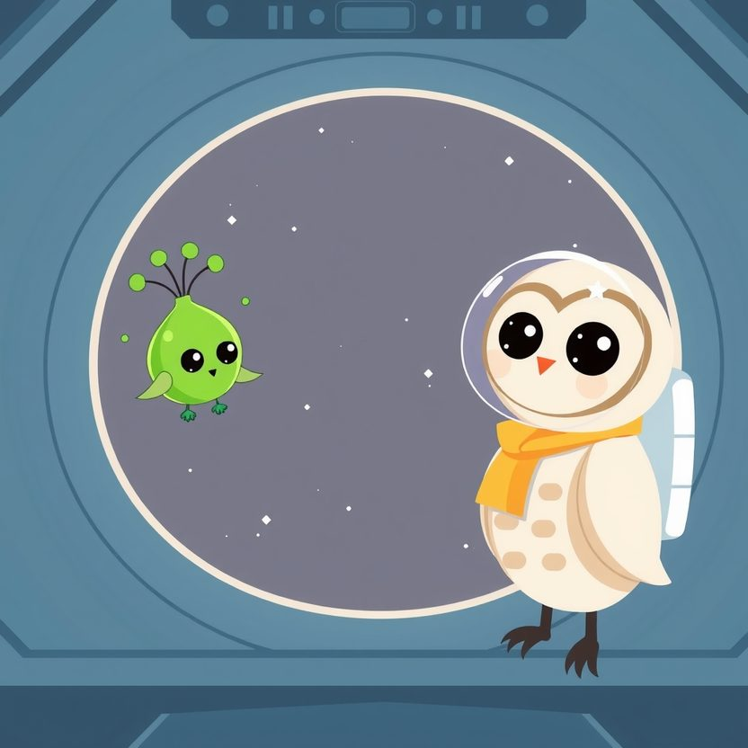

Titistoire › Les Étoiles (3-6 ans)
Plume et Zig qui parlait en couleurs
Une histoire de Plume la chouette pour parler de : la différence.

▶ Écouter et regarder l'histoire
Gratuit, sans inscription : la voix lit, le texte suit mot à mot, les images tournent comme dans un album.
Le texte de l'histoire
À la station des Trois Lunes, un nouveau vient d'arriver. Il s'appelle Zig. Sa planète est si lointaine, si perdue au fond du ciel, qu'elle ne figure sur aucune carte.
Zig est vert, mou et tremblotant comme de la gelée. Ses trois yeux, au bout de trois tiges, regardent chacun de leur côté. Et surtout, Zig ne parle pas. Pas un mot.
À la place, il s'allume. Du jaune, du bleu, du rose, qui lui glissent sur le corps comme de petits nuages. Plume n'a jamais rien vu d'aussi joli.
« Bonjour ! lance Filou. Tu joues ? » Zig vire au jaune. « Il ne répond pas. Il est bizarre », bougonne le renard. « Tu veux un biscuit ? » propose Nestor. Zig devient orange, avec des points.
« Il ne dit même pas merci ! » Au bout d'une semaine, plus personne ne lui parle. « Laisse, il ne comprend rien. » Et l'on joue au ballon sans lui.
Zig reste recroquevillé dans son coin, près du grand hublot. Il est d'un bleu-gris tout terne, couleur de jour de pluie. Personne ne se demande ce que ça veut dire. Personne, sauf Plume.
Plume non plus n'est pas bien bavarde. Mais elle observe. Et à force d'observer, elle a remarqué quelque chose : les couleurs de Zig ne viennent jamais au hasard.
Quand le ballon roule près de lui : jaune. Quand ça sent bon le gâteau : orange à points. Et quand la porte claque… vlan ! Violet, d'un seul coup.
Plume ouvre son petit carnet. Elle y note, en s'appliquant : « Jaune, content ? Orange, miam ? Violet, peur ? » Et elle revient le lendemain. Et le jour d'après. Et encore celui d'après.
Un matin, elle s'assoit tout près de lui, sans un mot. Zig devient violet, un peu. Elle ne bouge pas, elle attend. Tout doucement, le violet s'en va.
Alors Plume prend sa lampe de poche, glisse un papier jaune devant, et l'allume. Clic. Un rond de lumière jaune. Les trois yeux de Zig pivotent vers elle, tous ensemble.
Il regarde la lampe, il regarde Plume. Et soudain, tout son corps s'illumine d'un jaune éclatant, pétillant d'étincelles. Ça, ce n'est pas dans le carnet. Mais Plume comprend très bien.
Désormais, ils bavardent tous les jours. Plume avec ses papiers de couleur, Zig avec sa peau. Bleu clair : « ça va ? » Rose : « je t'aime bien. » Vert qui clignote : « tu me chatouilles ! »
Zig lui enseigne des couleurs qu'elle n'avait jamais vues. Il y en a une, entre le bleu et le doré, qui miroite quand il regarde les étoiles. Elle veut dire : « ma maison me manque ». Plume la trouve très belle et très triste.
Elle lui répond en rose. Zig se blottit contre elle, sous son aile. Il est tiède, comme une bouillotte.
Un soir, clac ! Toute la station s'éteint. Plus de lumière. Plus de radio. Une panne géante. Les petits astronautes avancent à tâtons et se cognent dans le noir. « J'ai peur ! » « Où est la sortie ? »
On s'appelle, on crie, mais dans les longs couloirs les voix s'égarent. Personne ne sait plus où aller.
Pourtant, au fond du noir, une lueur verte palpite. Il y a là quelqu'un qui n'a besoin d'aucune lampe pour se faire comprendre.
Zig s'allume. Fort. Plus fort qu'une veilleuse, plus fort qu'un phare. « Suivez-le ! » ordonne Plume. « Mais on ne comprend rien à ce qu'il raconte ! » proteste Filou. « Moi, si. »
Zig devient vert. « Vert : on avance ! » traduit Plume. Rouge. « Rouge : stop, il y a une marche. » Bleu qui tourne. « À gauche ! » Et toute la file suit la petite lumière, à la queue leu leu, en se tenant par la patte.
Ils débouchent dans la grande salle juste quand le courant revient. Tout le monde est là, sain et sauf. Zig scintille de toutes les couleurs à la fois, un mélange que même Plume ne connaît pas. Elle devine : il est fier.
Le lendemain, Filou arrive avec un papier jaune collé sur le front. « Ça veut bien dire bonjour ? » s'inquiète-t-il. Nestor, lui, a préparé un gâteau orange à points.
À présent, à la station des Trois Lunes, tout le monde parle un peu le Zig. Et Zig, lui, a appris un mot. Un seul. Il le souffle tout doucement, d'une voix de bulle de savon : « Plume. »
Et quand il le dit, il devient rose.